수능(국어영역) (2015-11-12 기출문제)
1. <보기>는 위에 제시된 대담 내용을 바탕으로 학생들이 나눈 대화이다. 이 대화를 고려할 때, ㉠과 ㉡에 들어갈 내용으로 가장 적절한 것은?(1번 공통지문 문제)
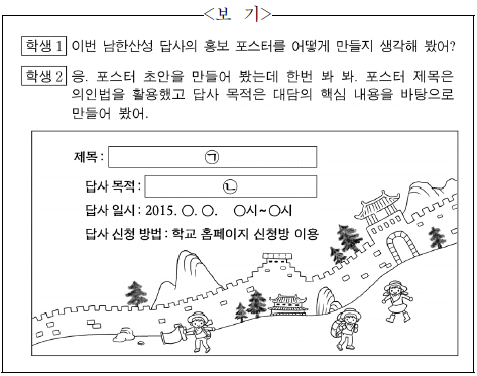
- ㉠ : 우리나라 축성술의 꽃, 남한산성
㉡ : 남한산성 축성술에 담긴 과학적 원리에 대해 알아보기 - ㉠ : 남한산성이 들려주는 시대별 축성술 이야기
㉡ : 남한산성을 답사하며 시대별 축성술의 특징을 살펴보기 - ㉠ : 우리 함께 타임머신을 타고 남한산성으로 떠나요!
㉡ : 남한산성에 얽힌 항전의 역사를 확인해 보기 - ㉠ : 세계 속에 우뚝 선 우리의 건축 문화, 남한산성
㉡ : 유네스코 세계 문화유산으로 등재되기까지의 과정을 통해 남한산성에 대한 자부심을 느껴 보기 - ㉠ : 남한산성의 돌, 신라 시대 축성술의 비밀을 간직하다
㉡ : 옛 주장성을 완벽히 재현해 낸 축성술을 중심으로 남한산성에 담긴 조상들의 지혜를 배워 보기
(정답률: 54%)

2. 다음은 학생의 발표 연습을 들은 선생님의 조언이다. ㉠～㉣중 학생이 발표에서 실제로 반영한 것만을 있는 대로 고른 것은?(3번 공통지문 문제)
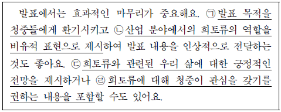
- ㉠, ㉡
- ㉠, ㉢
- ㉢, ㉣
- ㉠, ㉡, ㉣
- ㉡, ㉢, ㉣
(정답률: 42%)
3. 다음은 발표를 들은 청중이 발표자에게 한 질문의 일부이다. 발표 내용에 대한 이해를 바탕으로 추가 설명을 요청하는 학생의 질문으로 적절하지 않은 것은? [3점](3번 공통지문 문제)
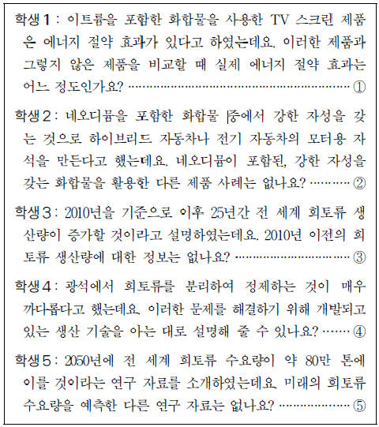
- ①
- ②
- ③
- ④
- ⑤
(정답률: 8%)
4. ‘작문 계획’의 [가]에 따라 작성한 [A]의 내용으로 가장 적절한 것은? [3점](6번 공통지문 문제)
- 공공 데이터는 국민 생활에 편의를 제공하고 국민들의 생활을 개선하기 위해 만든 자료이다. 앞으로 공공 데이터의 이용이 활성화되면 국민들의 삶의 질이 향상될 것이다.
- 공공 데이터는 자본과 아이디어가 부족해 앱을 개발하지 못하는 사람들이 유용하게 이용할 수 있다. 앱 개발을 통한 창업이 활성화되면 우리 경제에도 큰 도움이 될 것이다.
- 공공 데이터를 이용하여 앱 개발을 하는 사람들은 시간과 비용의 문제를 극복하고 경제적 가치를 창출하는 사람들이다. 앞으로 공공 데이터의 양이 증가하면 그들이 만들어 내는 앱도 더 다양해질 것이다.
- 공공 데이터는 앱 개발에 필요한 실생활 관련 정보를 담고 있으며 앱 개발 비용의 부담을 줄여 준다. 그러므로 앱 개발 시 공공 데이터 이용이 활성화되면 실생활에 편의를 제공하는 다양한 앱이 개발될 것이다.
- 공공 데이터는 앱 개발을 할 때 부딪히는 자료 수집의 문제와 시간 부족 문제를 해결하여 쉽게 앱을 만들 수 있게 해 준다. 이런 장점에도 불구하고 국민들의 공공 데이터 이용에 대한 인식이 낮은 것은 문제라고 할 수 있다.
(정답률: 알수없음)
5. ⓐ～ⓔ를 고쳐 쓰기 위한 방안으로 적절하지 않은 것은?(6번 공통지문 문제)
- ⓐ : 조사의 사용이 잘못되었으므로 ‘도심에서’로 고친다.
- ⓑ : 앞뒤 내용을 고려하여 ‘그러나’로 고친다.
- ⓒ : 문맥상 부적절한 단어이므로 ‘늘이고’로 고친다.
- ⓓ : 문장 성분 간의 호응을 고려하여 ‘시행한’으로 고친다.
- ⓔ : 사동 표현이 부적절하게 사용되었으므로 ‘들지’로 고친다.
(정답률: 19%)
6. 다음은 학생이 초고를 쓰고 스스로 점검한 내용이다. 초고의 마지막에 추가할 문장으로 가장 적절한 것은?(9번 공통지문 문제)
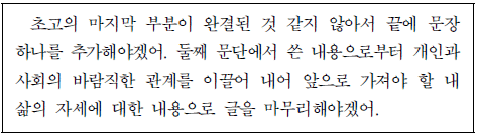
- 사회가 아름다운 하나의 빛깔을 가지려면 구성원들이 서로의 빛깔 차이를 줄여 가기 위해 노력해야 한다.
- 빠르게 변화하는 사회 속에서 정체성을 잃지 않기 위해 나의 고유한 빛깔을 소중하게 간직하고 살아가야겠다.
- 다양한 삶의 빛깔들로 이루어진 아름다운 세상을 위해 사람들의 서로 다른 삶의 빛깔을 인정하며 살아야겠다.
- 어려움을 겪고 있는 사람들에게 각자의 빛깔을 드러낼 기회를 줄 때 사회는 더욱 아름다운 빛깔을 지니게 될 것이다.
- 사람들과의 관계에 소홀했던 나의 태도를 바꾸기 위해 좀 더 적극적으로 사람들에게 다가서는 삶의 빛깔을 지녀야겠다.
(정답률: 17%)
7. 다음 ㉠～㉤에서 일어나는 음운 변동에 대한 설명으로 적절한 것은? [3점]
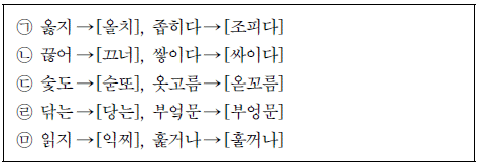
- ㉠, ㉡ : ‘ㅎ’과 다른 음운이 결합하여 한 음운으로 축약되는 현상이 일어난다.
- ㉠, ㉢, ㉤ : 앞 음절의 종성에 따라 뒤 음절의 초성이 된소리로 되는 현상이 일어난다.
- ㉢, ㉣ : ‘깊다 → [깁따]’에서처럼 음절 끝에서 발음되는 자음이 7개로 제한되는 현상이 일어난다.
- ㉣ : ‘겉모양 → [건모양]’에서처럼 앞 음절의 종성이 뒤 음절의 초성과 조음 위치가 같아지는 현상이 일어난다.
- ㉣, ㉤ : ‘앉고 → [안꼬]’에서처럼 받침 자음의 일부가 탈락하는 현상이 일어난다.
(정답률: 10%)
8. 다음의 (가)에 들어갈 말로 가장 적절한 것은?
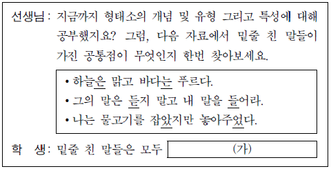
- 단어의 자격을 가지고 반드시 다른 말과 결합하여 쓰이는군요.
- 단어의 자격을 가지고 실질적 의미가 아닌 문법적 의미를 나타내는군요.
- 반드시 다른 말과 결합하여 쓰이고 음운 환경에 따라 그 형태가 바뀌는군요.
- 음운 환경에 따라 형태가 바뀌고 실질적 의미가 아닌 문법적 의미를 나타내는군요.
- 실질적 의미가 아닌 문법적 의미를 나타내고 반드시 다른 말과 결합하여 쓰이는군요.
(정답률: 19%)
9. <보기>의 ⓐ～ⓒ에 해당하는 예로 적절하지 않은 것은?
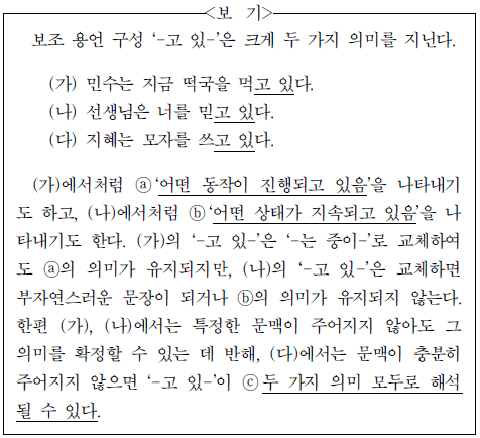
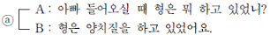
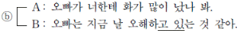
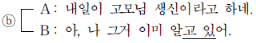
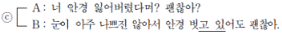
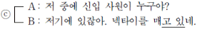
(정답률: 16%)
10. 다음은 ‘사전 활용하기’ 학습 활동을 위한 자료이다. 이에 대한 이해로 적절하지 않은 것은?
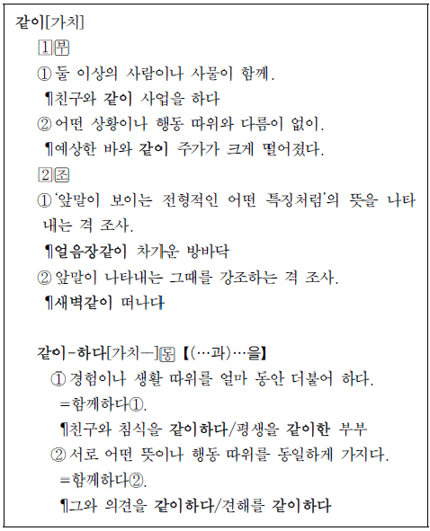
- ‘같이’의 품사 정보와 뜻풀이를 보니, ‘같이’는 부사로도 쓰이고 부사격 조사로도 쓰이는 말이로군.
- ‘같이’의 뜻풀이와 용례를 보니, ‘같이①’의 용례로 ‘매일같이 지하철을 타다’를 추가할 수 있겠군.
- ‘같이’와 ‘같이하다’의 표제어 및 뜻풀이를 보니, ‘같이하다’는 ‘같이’에 ‘하다’가 결합한 복합어로군.
- ‘같이하다’의 문형 정보 및 용례를 보니, ‘같이하다’는 두 자리 서술어로도 쓰일 수 있고, 세 자리 서술어로도 쓰일 수 있군.
- ‘같이하다’의 뜻풀이와 용례를 보니, ‘평생을 같이한 부부’의 ‘같이한’은 ‘함께한’으로 교체하여 쓸 수 있겠군.
(정답률: 알수없음)
11. 다음 중 문법적으로 가장 정확한 문장은?
- 그는 자기가 창안한 사회 이론을 더욱 발전해 사회 문제의 해결에 기여하고자 하였다.
- 참관인 자격으로 회의에 참석한 두 사람은 눈짓을 주고받은 후 조용히 회의장을 빠져나갔다.
- 유럽은 18세기 후반부터 약 100년 동안 생산 기술의 발달과 그에 따라 사회 조직의 큰 변화를 겪었다.
- 이 책의 저자가 독자에게 말하려는 요점은 모름지기 사람은 남을 위하여 자기를 희생할 줄도 알아야 한다.
- 그의 작품들은 엇비슷해서 학생들이 작품 이름의 혼동이나 각 작품의 이야기 줄거리를 잘 기억하지 못했다.
(정답률: 17%)
12. [가]에서 문이 90° 회전하는 동안의 상황에 대한 이해로 적절한 것은?(16번 공통지문 문제)
- 알짜 돌림힘의 크기는 점점 증가한다.
- 문의 회전 운동 에너지는 점점 증가한다.
- 문에는 돌림힘의 평형이 유지되고 있다.
- 알짜 돌림힘과 갑의 돌림힘은 방향이 같다.
- 갑의 돌림힘의 크기는 을의 돌림힘의 크기보다 크다.
(정답률: 10%)
13. 윗글을 바탕으로 할 때, <보기>의 ‘원판’의 회전 운동에 대한 이해로 적절하지 않은 것은? [3점](16번 공통지문 문제)
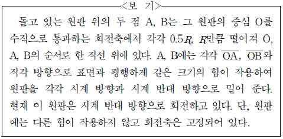
- 두 힘을 계속 가해 주는 상태에서 원판의 회전 속도는 증가한다.
- A, B에 가해 주는 힘을 모두 제거하면 원판은 일정한 회전 속도를 유지한다.
- A에 가해 주는 힘만을 제거하면 원판의 회전 속도는 증가한다.
- A에 가해 주는 힘만을 제거한 상태에서 원판이 두 바퀴 회전하는 동안 알짜 돌림힘이 한 일은 한 바퀴 회전하는 동안 알짜 돌림힘이 한 일의 4배이다.
- B에 가해 주는 힘만을 제거하면 원판의 회전 운동 에너지는 점차 감소하여 0이 되었다가 다시 증가한다.
(정답률: 17%)
14. ㉠에 대한 이해로 적절하지 않은 것은?(19번 공통지문 문제)
- ㉠에서 전자는 역방향 전압의 작용으로 속도가 증가한다.
- ㉠에 형성된 강한 전기장은 충돌 이온화가 일어나는 데 필수적이다.
- ㉠에 유입된 전자가 생성하는 전자-양공 쌍의 수는 양자 효율을 결정한다.
- ㉠에서 충돌 이온화가 많이 일어날수록 전극에서 측정되는 전류가 증가한다.
- 흡수층에서 ㉠으로 들어오는 전자의 수가 늘어나면 충돌 이온화의 발생 횟수가 증가한다.
(정답률: 10%)
15. 윗글을 바탕으로 <보기>의 ‘본 실험’ 결과를 예측한 것으로 적절하지 않은 것은? [3점](19번 공통지문 문제)
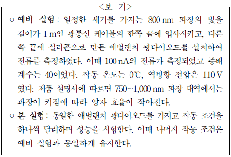
- 역방향 전압을 100 V로 바꾼다면 증배 계수는 40보다 작아 지겠군.
- 역방향 전압을 120 V로 바꾼다면 더 약한 빛을 검출하는 데 유리하겠군.
- 작동 온도를 20℃로 바꾼다면 단위 시간당 전극으로 방출되는 전자의 수가 늘어나겠군.
- 광통신 케이블의 길이를 100 m로 바꾼다면, 측정되는 전류는 100 nA보다 작아지겠군.
- 동일한 세기를 가지는 900 nm 파장의 빛이 입사된다면 측정되는 전류는 100 nA보다 작아지겠군.
(정답률: 19%)
16. 윗글을 이해한 내용으로 적절하지 않은 것은?(22번 공통지문 문제)
- 많은 관찰 증거를 확보하면 귀납의 정당화에서 나타나는 순환 논리 문제는 해소된다.
- 직관에 들어맞는 확률 논리라 하더라도 귀납의 논리적 문제를 근본적으로 해결하지 못한다.
- 관찰 증거가 가설을 지지하는 정도를 확률로 표현할 수 있다는 입장은 귀납을 옹호한다.
- 흄에 따르면, 귀납의 정당화는 귀납에 의한 정당화를 필요로 하는 지식에 근거해야 가능하다.
- 귀납의 지식 확장적 특성은 이미 알고 있는 사실을 근거로 아직 알지 못하는 사실을 추론하는 데에서 비롯된다.
(정답률: 9%)
17. 라이헨바흐의 논증에 대한 평가로 적절하지 않은 것은?(22번 공통지문 문제)
- 귀납이 지닌 논리적 허점을 완전히 극복한 것은 아니라는 비판의 여지가 있다.
- 귀납을 과학의 방법으로 사용할 수 있음을 지지하려는 목적에서 시도하였다는 데 의미가 있다.
- 귀납과 다른 방법을 비교하기 위해 경험적 판단과 논리적 판단을 모두 활용한 것이 특징이다.
- 귀납과 견주어 미래 예측에 더 성공적인 방법이 없다는 판단을 근거로 귀납의 가치를 보여 주고 있다.
- 귀납이 현실적으로 옳은 추론 방법임을 밝히기 위해 자연의 일양성이 선험적 지식임을 증명한 데 의의가 있다.
(정답률: 17%)
18. 윗글을 바탕으로 할 때, <보기>의 (ㄱ), (ㄴ)에 대한 A와 B의 입장을 추론한 것으로 적절하지 않은 것은? [3점](22번 공통지문 문제)
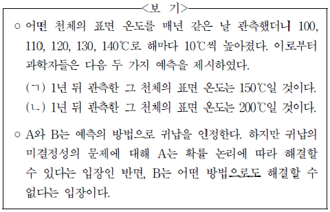
- A와 B는 둘 다 과학자들이 예측한 (ㄱ)과 (ㄴ)이 모두 기존의 관찰 근거에 따른 것이라고 보겠군.
- A는 (ㄱ)과 (ㄴ) 중 하나가 더 나은 예측임을 결정할 수 있다고 하겠군.
- A는 그 천체의 표면 온도가 100℃이기 1년 전에 90℃였다는 정보를 추가로 얻으면 (ㄱ)이 옳을 개연성이 더 높아진다고 판단하겠군.
- B는 (ㄱ)에 대해서 가능한 예측이라고 할지언정 (ㄴ)보다 더 나은 예측이라고 결정하지는 않겠군.
- B는 그 천체의 표면 온도가 100℃이기 1년 전에 60℃였다는 정보를 추가로 얻으면 (ㄴ)을 (ㄱ)보다 더 나은 예측으로 채택 하겠군.
(정답률: 20%)
19. ⓐ의 문맥적 의미와 가장 가까운 것은?(22번 공통지문 문제)
- 혼란에 빠진 적군은 지휘 계통이 무너졌다.
- 그의 말을 듣자 모든 사람들이 기운이 빠졌다.
- 그는 무릎 위까지 푹푹 빠지는 눈길을 헤쳐 왔다.
- 그의 강연에 자신의 주장이 빠져 모두 아쉬워했다.
- 우리 제품은 타사 제품에 빠지지 않는 우수한 것이다.
(정답률: 알수없음)
20. ㉠에 대한 추론으로 적절한 것은?(27번 공통지문 문제)
- 첫 번째 소송에서 P는 계약이 유효하다고 주장하고, E는 계약이 유효하지 않다고 주장할 것이다.
- 첫 번째 소송의 판결문에는 E가 수강료를 내야 할 의무가 있다는 내용이 실릴 것이다.
- 첫 번째 소송에서나 두 번째 소송에서나 P가 할 청구는 수강료를 내라는 내용일 것이다.
- 두 번째 소송에서는 E가 첫 승소라는 조건을 달성하지 못한 상태이므로 P는 수강료를 받을 수 있을 것이다.
- 첫 번째와 두 번째 소송의 판결은 P와 E 사이에 승패가 상반될 것이므로 두 판결 가운데 하나는 무효일 것이다.
(정답률: 10%)
21. 윗글을 바탕으로 <보기>의 사례를 검토한 내용으로 적절하지 않은 것은? [3점](27번 공통지문 문제)
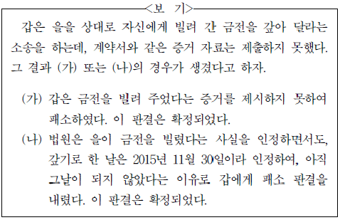
- (가)의 경우, 갑은 더 이상 상급 법원에 상소하여 다툴 수 있는 방법이 남아 있지 않다.
- (가)의 경우, 갑은 빌려 준 금전에 대한 계약서를 발견하더라도 그것을 근거로 하여 금전을 갚아 달라고 소송하는 것은 허용되지 않는다.
- (나)의 경우, 을은 2015년 11월 30일이 되기 전에는 갑에게 금전을 갚지 않아도 된다.
- (나)의 경우, 2015년 11월 30일이 지나면 갑이 을을 상대로 금전을 갚아 달라는 소송을 다시 하더라도 기판력에 저촉되지 않는다.
- (나)의 경우, 이미 지나간 2015년 2월 15일이 갚기로 한 날임을 밝혀 주는 계약서가 발견되면 갑은 같은 해 11월 30일이 되기 전에 그것을 근거로 금전을 갚아 달라는 소송을 할 수 있다.
(정답률: 알수없음)
22. 문맥상 ⓐ～ⓔ와 바꿔 쓰기에 가장 적절한 것은?(27번 공통지문 문제)
- ⓐ : 수취하였다
- ⓑ : 부가하는
- ⓒ : 지시한다
- ⓓ : 형성되었을
- ⓔ : 경유하여
(정답률: 10%)
23.  를 중심으로 윗글을 이해한 내용으로 적절하지 않은 것은? [3점](31번 공통지문 문제)
를 중심으로 윗글을 이해한 내용으로 적절하지 않은 것은? [3점](31번 공통지문 문제)
 의 철거 결정에는 ‘남편’의 실용적인 가치관이 작용하고 있다.
의 철거 결정에는 ‘남편’의 실용적인 가치관이 작용하고 있다. 의 철거를 주장한 ‘남편’은 ‘견고한 양옥’의 설계에서도 자신의 뜻을 반영하였다.
의 철거를 주장한 ‘남편’은 ‘견고한 양옥’의 설계에서도 자신의 뜻을 반영하였다. 의 철거는 ‘나’와의 친밀감을 회복하고자 하는 ‘남편’의 의지가 좌절된 사건을 의미한다.
의 철거는 ‘나’와의 친밀감을 회복하고자 하는 ‘남편’의 의지가 좌절된 사건을 의미한다. 는 과거의 ‘나’가 투영된 대상으로 ‘나’의 의식 속에 환기되어 내면의 갈등상태를 드러내고 있다.
는 과거의 ‘나’가 투영된 대상으로 ‘나’의 의식 속에 환기되어 내면의 갈등상태를 드러내고 있다.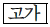
를 ‘남편’은 ‘음침한 고가’로, ‘나’는 ‘숙연한 고가’로 표현하여 인물에 따른 관점의 차이를 드러내고 있다.
(정답률: 10%)
24. <보기>를 ⓐ에 대한 ‘남편’의 속말이라고 가정할 때, ⓑ에 들어갈 말로 가장 적절한 것은?(31번 공통지문 문제)
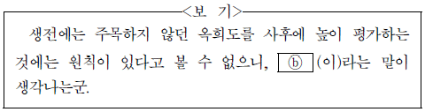
- 모래 위에 쌓은 성
- 고양이 쥐 사정 보듯
- 까마귀 날자 배 떨어진다
- 귀에 걸면 귀걸이 코에 걸면 코걸이
- 될성부른 나무는 떡잎부터 알아본다
(정답률: 알수없음)
25. ㉠과 ㉡에 대한 이해로 가장 적절한 것은?(34번 공통지문 문제)
- ㉠으로 인해 생긴 ‘말똥이’와 ‘마름’ 간의 불화 때문에 ‘마름’이 ㉡과 같은 조치를 취하려 한다.
- ㉠은 ‘마름’이 헛간으로 들어오는 것을 눈치 채고 ‘말똥이’가 ㉡을 대비하면서 조성한 것이다.
- ㉠으로 인해 ‘개똥이’는 ‘말똥이’에 대한 증오심을, ㉡으로 인해 ‘마름’은 ‘국서’ 부부에 대한 불만을 갖게 된다.
- ㉠으로 인해 ‘국서’와 ‘말똥이’ 사이의 갈등이 시작되고, ㉡으로 인해 ‘국서’와 ‘말똥이’ 사이의 갈등이 고조된다.
- ㉠으로 인해 ‘말똥이’는 소의 상태를 확인하고, ㉡이라는 말을 듣고 ‘국서’는 ‘마름’을 자극하지 않으려고 노력하고 있다.
(정답률: 0%)
26. <보기>를 참고할 때, 윗글에 대한 감상으로 적절하지 않은 것은?(34번 공통지문 문제)
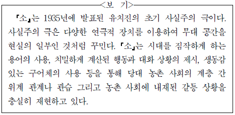
- ‘소’, ‘울타리’, ‘빈 지게’, ‘헛간’ 등을 연극적 장치로 이용하여 무대 공간을 현실의 일부인 것처럼 꾸미고 있군.
- 인물의 감정이 격앙되어 있음을 보여 주는 행동과 생동감 있는 구어체의 말투를 통해 갈등 상황을 실감 나게 제시하고 있군.
- ‘마름’의 뒤를 따라가는 ‘국서’의 행동과 ‘국서’에게 지시하는 ‘마름’의 행동을 통해 농촌 사회의 계층 간 위계 관계를 보여주고 있군.
- ‘농지령’, ‘작인’, ‘도지’ 등 농민과 관련된 법령 및 용어를 사용하여 무대 위의 상황이 당대의 농촌 현실과 긴밀하게 연관되어 있음을 보여 주는군.
- ‘늙은 사람 앞에 ～ 고약한 눔 같으니!’, ‘나를 보고는 그만 도망을 했어!’ 등의 대사를 통해 계층 간 위계 관계를 중시하는 당대 농촌 사회의 관습을 보여 주는군.
(정답률: 0%)
27. ㉠～㉤에 대한 설명으로 적절하지 않은 것은?(37번 공통지문 문제)
- ㉠ : 유사한 어구의 반복과 대구를 통해 인물의 심경을 드러내고 있다.
- ㉡ : 의태어를 활용하여 대상의 움직이는 모습을 생생하게 보여 주고 있다.
- ㉢ : 동일 행위에 대한 다양한 묘사를 통해 대상이 처한 긴박한 상황을 역동적으로 보여 주고 있다.
- ㉣ : 고사를 활용하여 상대에게 화자의 의견을 전달하고 있다.
- ㉤ : 편집자적 논평을 통해 인물의 행위에 대한 서술자의 시각을 보여 주고 있다.
(정답률: 24%)
28. <보기>를 참고하여 윗글을 감상한 내용으로 적절하지 않은 것은? [3점](37번 공통지문 문제)
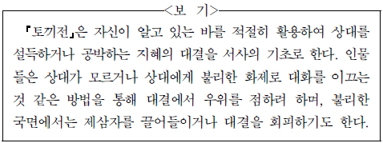
- 별주부는 호랑이가 모르는 별주부 자신의 근본으로 화제를 이끌어 자신의 우위를 확보해 나가고 있군.
- 호랑이는 별나리에 대한 자신의 무지를 드러내어 별주부에게 자신을 공략할 빌미를 제공하고 있군.
- 별주부는 범치가 토끼의 간에 대해 말한 바를 가지고 토끼를 회유하여 토끼와의 대결을 회피하고 있군.
- 토끼는 용왕의 병과 관련하여 자신으로부터 별주부로 화제를 옮김으로써 불리한 상황을 벗어나려 하고 있군.
- 토끼는 별주부가 자신을 유인했던 과거의 일을 화제로 끌어들여 자신의 우위를 강화하고 있군.
(정답률: 24%)
29. <보기>는 (나)의 글쓴이가 창작을 위해 세운 계획을 가상적으로 구성한 것이다. <제1수>～<제4수>에 공통적으로 반영된 것만을 있는 대로 고른 것은?(40번 공통지문 문제)
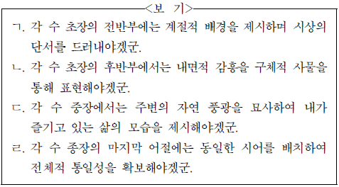
- ㄱ, ㄴ
- ㄱ, ㄹ
- ㄴ, ㄷ
- ㄱ, ㄷ, ㄹ
- ㄴ, ㄷ, ㄹ
(정답률: 10%)
30. <보기>를 바탕으로 (가)와 (나)를 감상한 것으로 적절하지 않은 것은? [3점](40번 공통지문 문제)
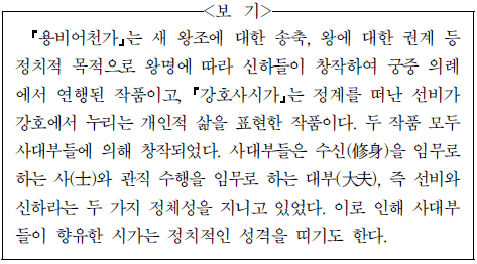
- (가)에서 ‘뿌리 깊은 나무’와 ‘샘이 깊은 물’은 기반이 굳건하고 기원이 유구하다는 뜻을 내세워 왕조를 송축하는 표현이겠군.
- (가)에서 ‘경천근민’의 덕목을 부각하여 왕에 대해 권계한 것은 ‘대부’로서의 정치적 의식을 드러낸 것이군.
- (나)에서 ‘한가’하게 ‘소일’하는 개인적 삶도 임금의 은혜 덕분이라고 표현한 데서 정치적 성격을 엿볼 수 있군.
- (나)에서 ‘강파’, ‘바람’ 등의 자연물과 ‘소정’, ‘그물’ 등의 인공물의 대립은 ‘사’와 ‘대부’라는 정체성 사이에서 고뇌하는 모습을 드러내는군.
- (가)의 ‘한강 북녘’은 새 왕조의 터전이라는 정치적 의미를 지니고, (나)의 ‘강호’는 개인적, 정치적 의미를 모두 지니고 있겠군.
(정답률: 8%)
31. (가)에 대한 이해로 가장 적절한 것은?(43번 공통지문 문제)
- ‘무거운 어깨를 털고’는 지상으로부터 벗어나기 위해 사물들이 몸부림치는 모습을 표현한 것이다.
- ‘노동의 시간을 즐기고’는 노동의 고단함을 잊기 위해 사물들이 경쾌하게 움직이는 모습을 표현한 것이다.
- ‘즐거운 지상의 잔치’는 기존의 사물들이 새로 태어난 사물들을 반갑게 맞이하는 모습을 표현한 것이다.
- ‘태양의 즐거운 울림’은 하늘의 태양이 지상에 있는 사물들과 서로 어울려 생기를 띠는 모습을 표현한 것이다.
- ‘세상은 개벽을 한다’는 사물들이 새로운 형태로 변화하면서 혼란을 겪는 모습을 표현한 것이다.
(정답률: 20%)
32. (나)의 [A]～[E]에 대한 감상으로 적절하지 않은 것은?(43번 공통지문 문제)
- [A]에서 화자는 ‘텔레비전’을 끈 후 평소 관심을 두지 못했던 ‘풀벌레 소리’를 지각하고 있어.
- [B]에서 화자는 ‘큰 울음’뿐만 아니라 ‘들리지 않는 소리’도 존재한다는 것을 알게 됨으로써 화자의 인식 범위가 확장되고 있어.
- [C]에서 화자는 ‘들리지 않는 소리’의 주체들이 화자 자신 때문에 서로 소통할 수 없게 된 것에 대해 미안함을 느끼고 있어.
- [D]에서 화자는 자신이 의식하지 못했던 ‘그 울음소리들’을 떠올리며, 그 소리를 간과했던 삶을 성찰하고 있어.
- [E]에서 화자는 ‘그 소리들’을 귀로만 듣지 않고 내면 깊숙이 받아들이고 있는 자신의 모습을 확인하고 있어.
(정답률: 알수없음)
㉡ : 남한산성을 답사하며 시대별 축성술의 특징을 살펴보기"이다.